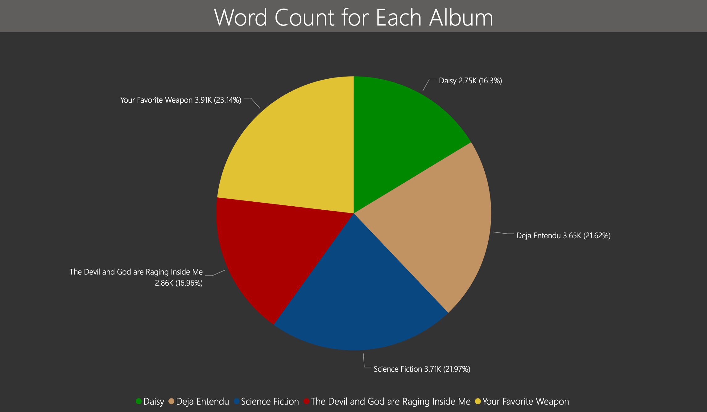

The word cloud below is a data visualization that shows which words were used most for each album. The word cloud displays this information by showing words that were used more predominantly in a larger font and a brighter color. On the contrary, words that were used less frequently are shown in a smaller font with a darker color. For sake of variety, many unnoteworthy words were exluded from the data source, such as 'and', 'the', 'to', 'I', 'you', 'an', etc...
Additionally, by hovering over each word, the word cloud will display the number of times each word was used (number of records).The pie chart below the word cloud shows approximately how many words were used in each album. By this comparision, the sizes of each album's word cloud comprehend the album's total number of words.
The BPM graphs below show the analysis of each song's tempo. The beats per minute of each song can give the listener an idea of how fast or slow the song is. Granted, the bpm of some songs can be measured differently, such as being measured in halftime, as many are in Your Favorite Weapon.

The graph below displays the assortment of the most prominent lyrical references and imagery amongst all five studio albums. References to Christianity and the Bible were the most used references by far. These references appeared to have grown in their usage over time. Other references like death and water were also used widespread in each album.

The graph below displays the structural complexity of each album based on the songs within that album. Clicking the bar graph will display an interactive way to view a table of more specific details about which songs exactly were most complex or least complex for each album.

By the end of our work on this project, we realized there are many other graphical illustrations that could be made for more data visualizations on how Brand New has changed, or not changed, in their music over time. The analysis and data that our team did collect helped prove that there were certainly great strides of contrast between the first album and last album of Brand New’s work. Brand New proved to be a dynamic band that is able to change music and lyrical styles while remaining true to the signature feel and mood of Brand New.